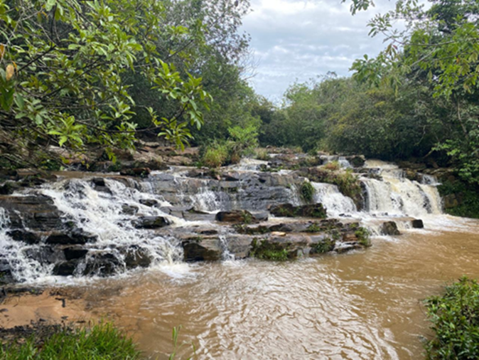

🌿
Ipameri Ecoturismo
Início
O que é Ecopedagogia
Onde fica Ipameri?
Dicas de segurança
Autora
Créditos
S
Simone F. S. Nunes

← Voltar às trilhas
Trilha
Cachoeira dos
Novatos
Ipameri — Goiás, Brasil
Galeria de Fotos
Mapa do Percurso
📍 Rota saindo de Ipameri até Cachoeira dos Novatos
Abrir rota completa no Google Maps